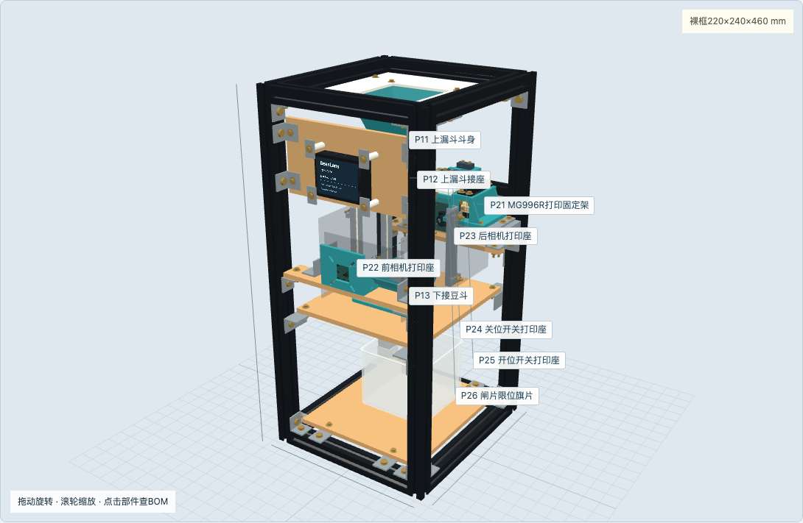
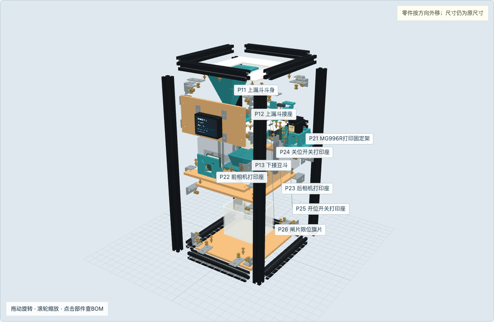
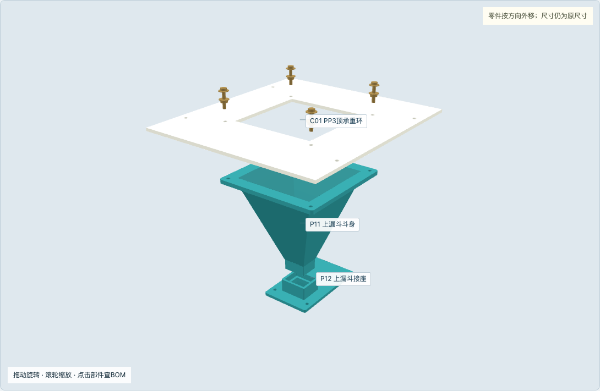
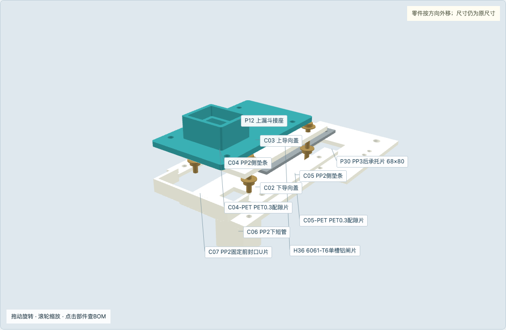
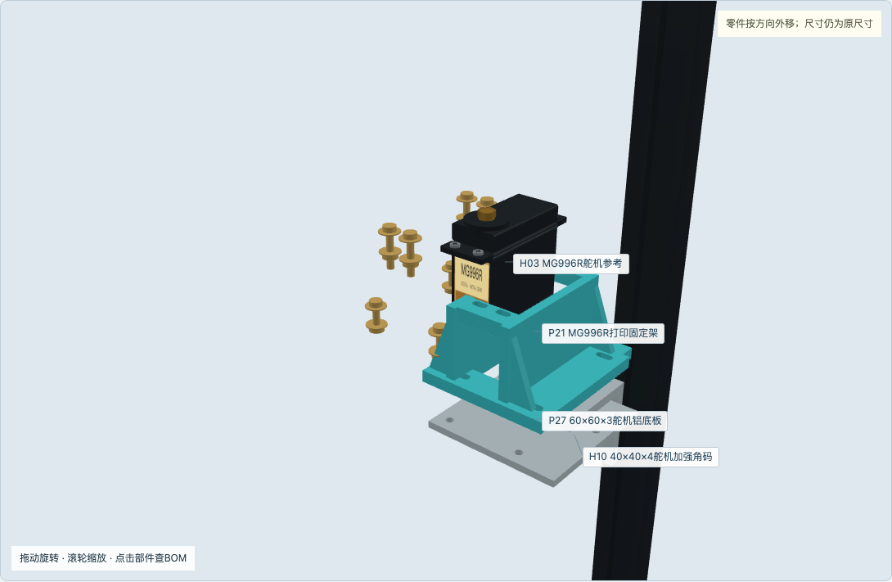
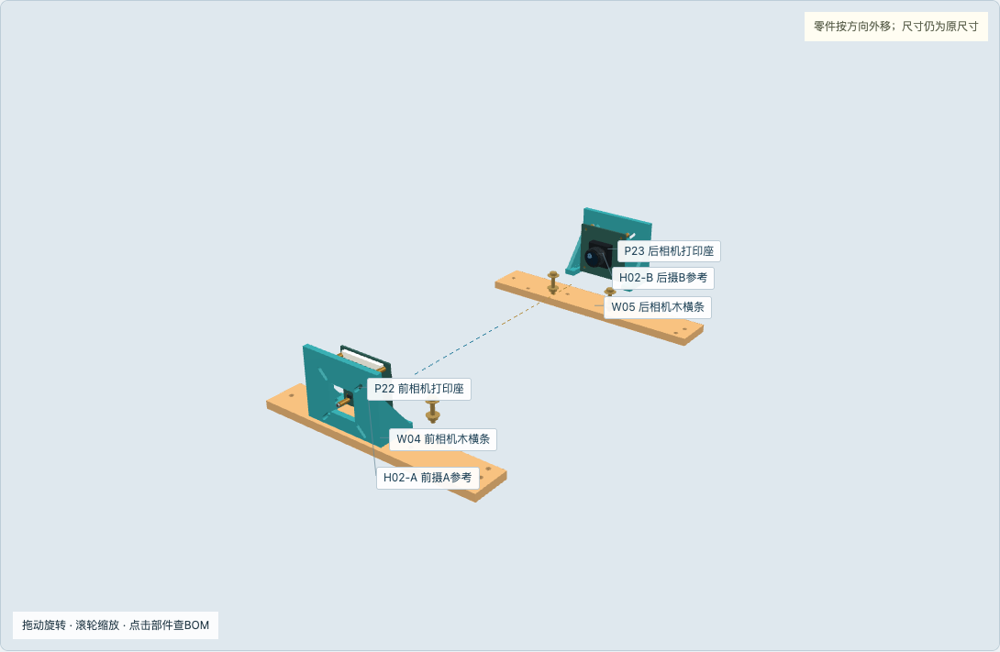
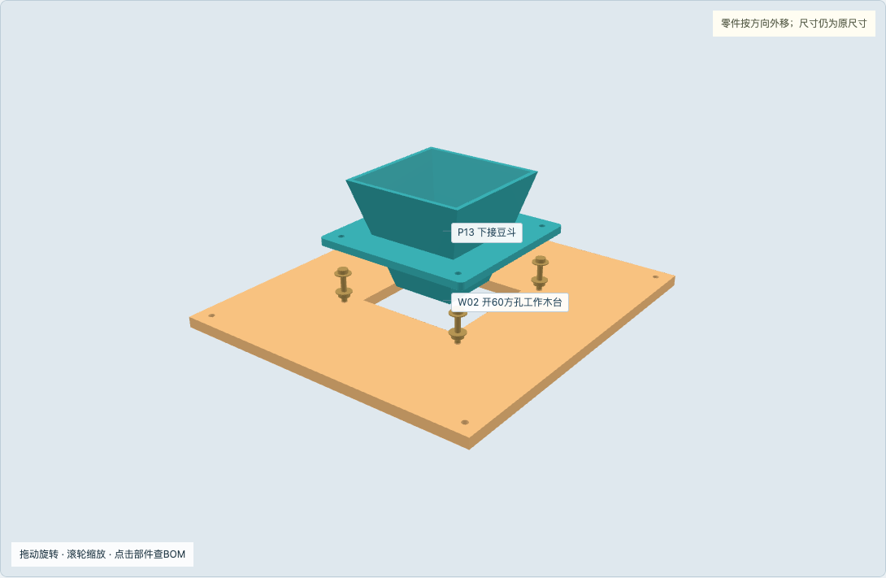
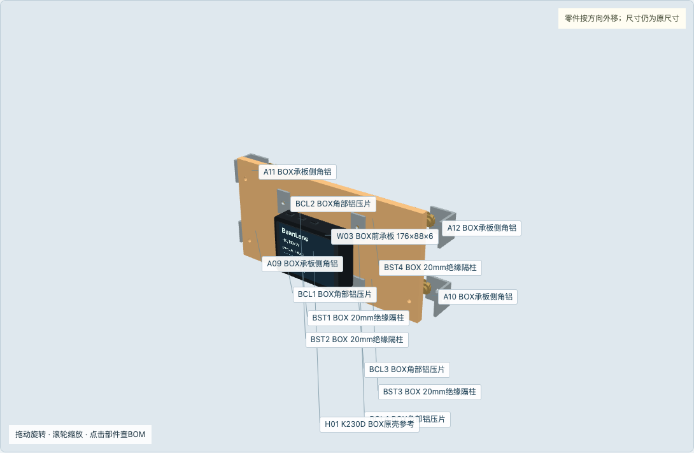
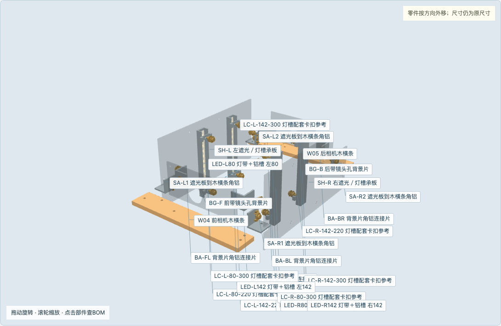

黑2020承重；5件海洋板保留；打印件通过法兰、底脚或隔柱固定。

各图均使用同一坐标与实体尺寸；前为小Y，X左右、Z向上。电源、降压和PWM缓冲在机外低压盒，不挤进豆路。机外接线沿用H3。
外移距离只为辨认；螺钉、垫片与槽内螺母为无螺纹参考。

不要按爆炸间距下料。打印方向在P3打印包中，装配方向以本图为准。上斗法兰贴PP环下方；下斗法兰贴工作木台上方。
两组独立螺钉：斗法兰到PP环；PP环到平连接片与型材底槽。

闸片只在2.3mm导槽内滑动；夹层螺栓穿侧条，绝不穿铝闸片。

固定架不动；一只R16舵臂＋50mm球心距杆驱动闸片。

两镜头水平相向，前30、后210，光轴同为Z260。

下斗落在工作木台上；底木板落在平片上。工作台四只宽40角铝支承。

面板前面Y20；压片、软垫与20mm隔柱只固定原壳角边。

侧片由角铝接前后木条；前后背景片带镜头孔。透明只为看内部。

采购基准包含备件；先扣除原套件内已有数量。未知价格留空，不作零元。